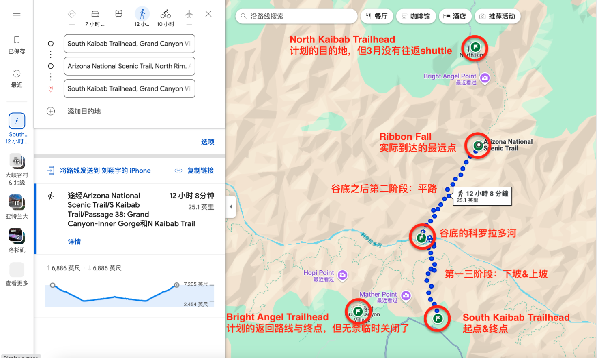
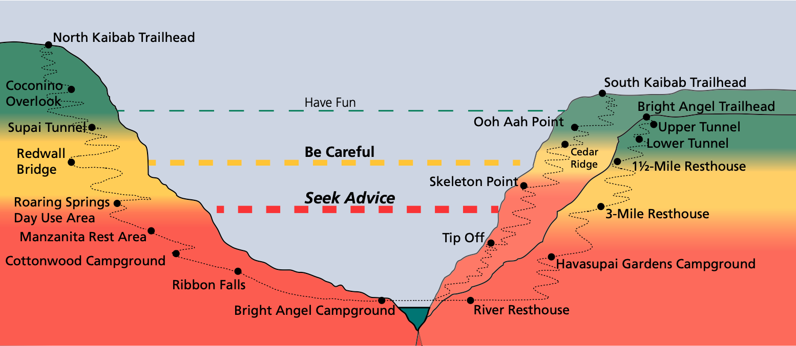
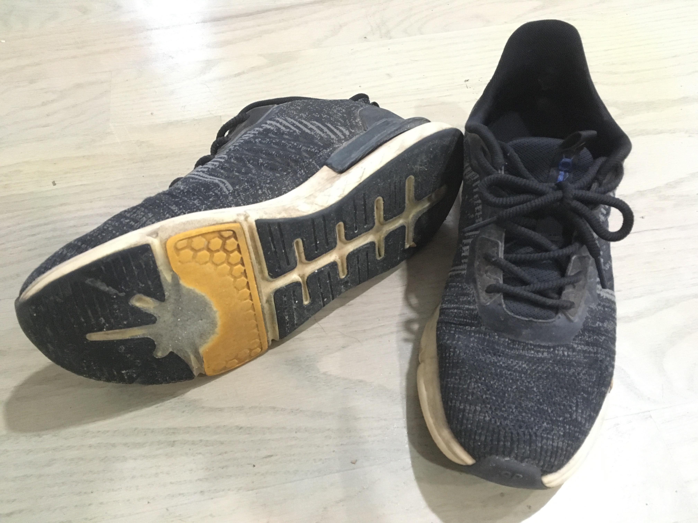
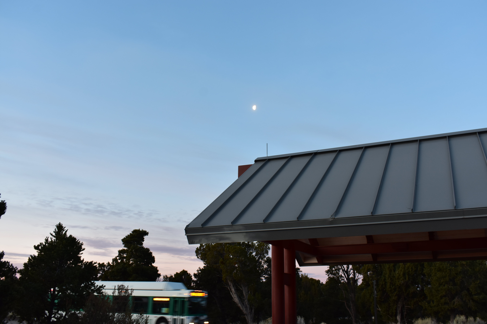
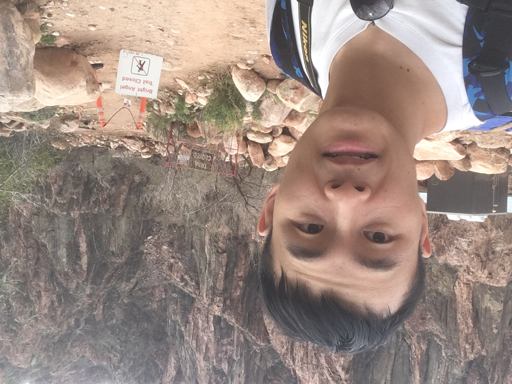
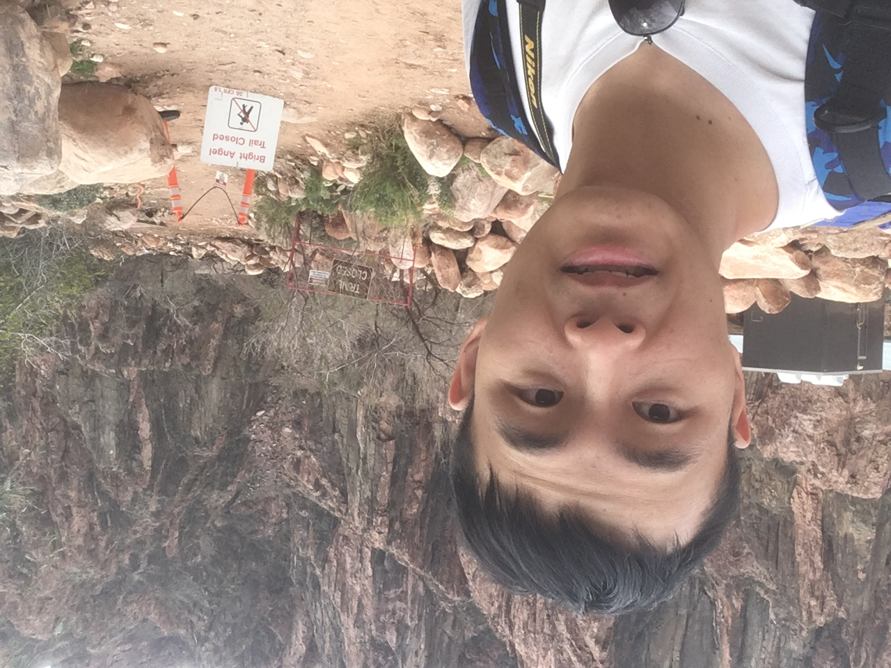
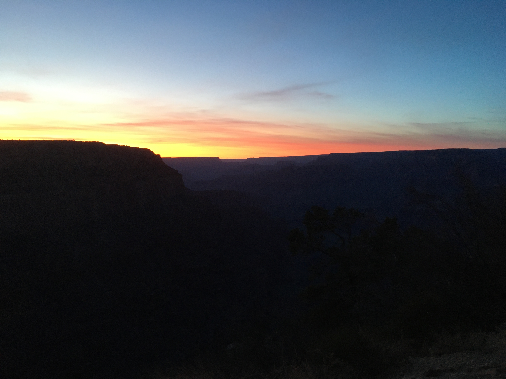
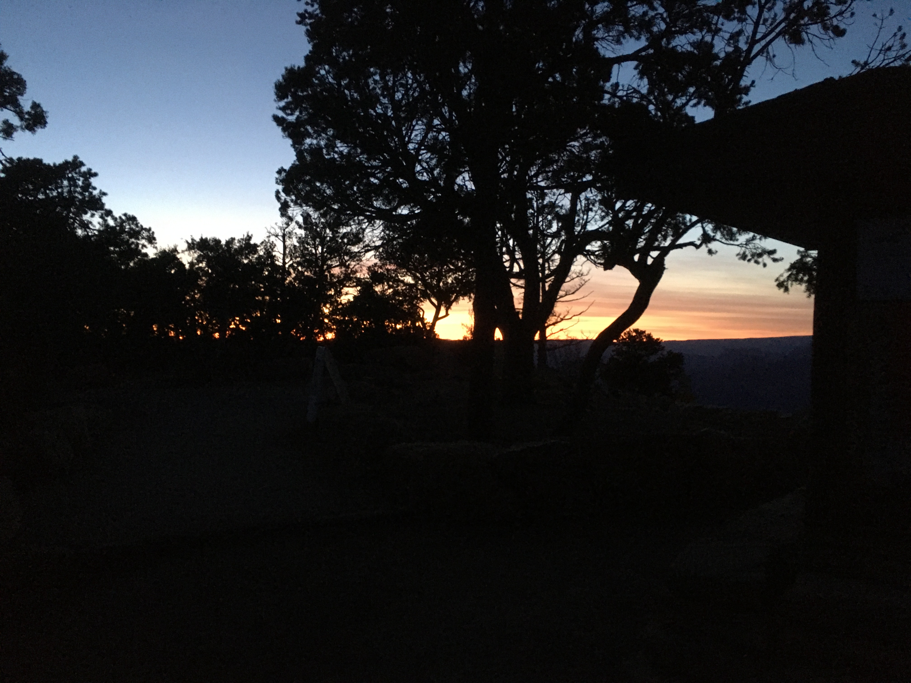
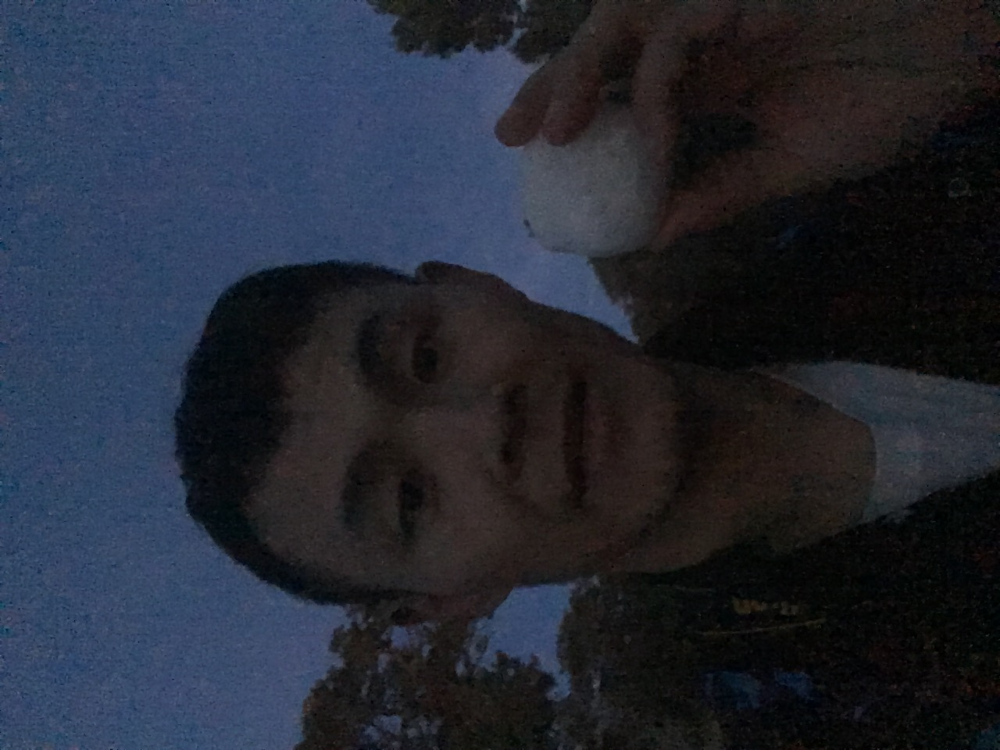

For better presentation I decide to write in Chinese. (My foreign friends, feel free to use translations.
过了两周之后才终于好好整理了一下3.20春假期间在Grand Canyon的40k徒步hiking。这个帖子既算是自己的日志回忆——对自己的极限体能的测试、也算是经验分享吧。不过说起来、我hiking的路子有点野、比如说装备不到位、不吃不喝什么的——其实这个负荷还是很大的、真要准备大峡谷南北hiking的话还是建议看更专业的户外贴、以及官方网站的提示。
 首先说一下路线、就如上图所示、大峡谷最出名的hiking大约是南缘-北缘(R2R) 这一条，需要花费一整天、本计划是走这条线由南到北、然后坐shuttle由北到南，但是大峡谷南北之间的shuttle只有5-11月开放，那我如果南-北之后咋回去呢？所以就退而求其次选择了这条南缘-谷底-南缘的折返路线、估计其实8h左右就完成了、但是我此行还有一个目的、就是想测试自己不吃不喝的极限体能续航是怎样的、于是就计划总共安排12小时天亮时间，到达谷底之后继续向北、看利用一半的时间6小时能走多远走多远、然后返程。结果就是、在谷底之后继续前进了两小时多最终到达了Ribbon Fall这个点，然后返程——最终形成了上图这个长达12小时 (实际上12h 25min)、40km的超长徒步，下坡-平地-上坡。
如下是全程的时间点整理
接下来说一下装备部分吧、如下就是我的出门装了、两瓶水+巧克力+薯片+相机，非常。。。不专业（甚至我一开始想把其中一瓶水换成一罐可乐在折返点时候爽一把的），后来考虑到想测试自己的极限续航、所以在折返点时候应该不吃喝、就改成备用水了。最终的测试结果就是、自己不吃+(几乎)不喝水的极限续航差不多10-11小时、也就是在距离终点一小时多的半山腰上坡路段、由于歇息的频率太高严重影响行进、就搞了一块巧克力+一瓶半水，也算是吃喝完毕之后约束自己、好吧既然有吃有喝了那就坚持住别搞那么多次休息努力在天黑之前完成测试。
整个行程断续碰到的人大都挺专业的、当然也少有几个像我这样随便的运动装就上了。还是说一下两个十分重要的点：
Hiking最美妙的地方莫过于沿途的瑰丽景色吧、而且、没有熙攘的人群、享受与大自然完全的融合、用眼观察、用心感受
赶着天尚未完全亮的时候、做大峡谷班车到出发点South Kaibab Trail

大峡谷标志景色


下坡路段。感受一下这种坡度和路况、真的、有手杖的话舒服太多了

两位工作人员、一开始还以为他们是负责trail上站点的物品运输、后来得知他们主要负责维护trail的路况。致敬！


大峡谷的日出


还是第一阶段的下坡路。我后面就是返程时候在这一路段休息尤其频繁


能看到这只小蜥蜴吗？


The Tipoff站点、这里会有桶收集雨水、需要自带过滤器。我在经过时就看到有两个hiking专业户（从装备上来看哈）在过滤水


沿路的山体形态颜色各有不同（想象一下大峡谷那么多层颜色）


已经可以看到谷底的科罗拉多河咯。这种场景让我联想到QQ飞车的一个地图“极速列车”的最后冲刺、大概就是像这种氮气全开飞跃峡谷。不过、实际上我们离谷底还有好长一段路嘞


逼近Black Bridge——穿过涵洞——在桥上俯瞰科罗拉多河。这个桥还是相当有趣的


谷底河滩景色、偶遇了一架直升机在运输大石头


从北侧流过来的溪水、我们接下来两个多小时的平原hiking都是沿着这条溪流。作为Hoco的保留节目、那自然是要尝一尝这溪水的味道如何咯 :D emm，还行、虽然不甜、不过也算清澈冰凉


穿过谷底营地之后，就又是另外一段漫长的行程咯


沿路有很多这种小桥、相当有趣。


这段路正值太阳暴晒、中午1点前后的样子。所以有些旅行者会更早出发来避开正午时分走这段路


中午12:25时候也就快过了6小时了、就琢磨能否找到一个标志点然后返程、但无奈这一路半天都没碰到合适的地标——真的是光秃秃的、地图上也是如此——打开map之后意识到离Ribbon Fall还挺近的，emm、其实也不算近哈还是走了二十多分钟的。不过还是很高兴自己又坚持往前走了更多。由于时间过半了、Ribbon Fall就没有去看（我估计还要再走个半小时）、准备返程
 

回程希望走另外Bright Angel这条路的、无奈被封了、只能原路返回咯


其实还是很想下河戏水的、但没有泳衣、没办法咯


返程上坡这段路是3-7点、大峡谷由于太阳的位置又有不同的景色


日落前后、大峡谷光与影的艺术
 7点左右、可以看到天已经几乎黑了、远处隐约有红色的日落余晖、还是特别漂亮的。
最后的5分钟路程、在路边团了一个小雪球玩 :D 最终在7:05返回终点 Yeah!